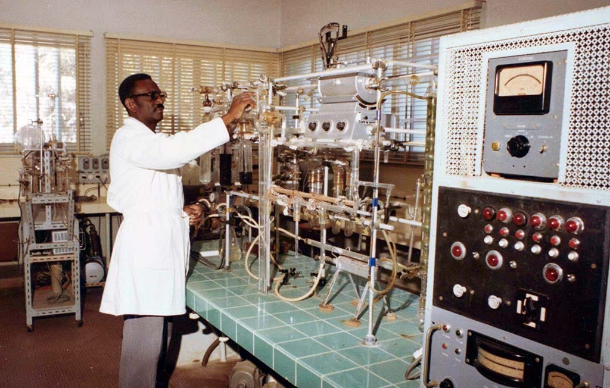

Sorry, I am back in the future
The carbon 14 and this great scientist


I have been writing here ideas, thoughts, questions, and things that I think are relevant to others as a way for being a better writer but mainly for highlighting how people like you could be venturing interesting tech-enabled ideas and offering them to the many sets of people who are seeking to leverage themselves with solutions ignited by technology. Every one of us wants to be 100X what he or she is willing to be, and do 100X and more of what he or she wants to do. I believe in the power of people-driven technology to help achieve this and I have been ideating for years about the how-to.
I have spotted silently most of the innovations and trends that have happened this last decade, away from developed countries here in this developing country where things are going as they did in the past. To say that getting an eye into the future isn't related to where we stand geographically or culturally but being connected and curious certainly makes it easier to have a clearer view of a piece of the future. I may console myself and say that if I was based in silicon valley I would already be running a billion-dollar market cap startup but being very close to something we want to see often makes it difficult to see it perfectly like how our eyes and digital focal systems behave. That’s only a year ago that I have started writing what I see and how I see it and I am hiding a lot because I am at the same time seeking an edge that could be converted to an economic advantage for a living. You may find some interesting clues about the future by reading me because most of today's trendy things and problems have been written by people who cared in the past. I have personally found many examples of this diving in old internet content that one could qualify as dark internet but dark internet is now a bad word associated with hacking and trafficking but it simply means internet content that search engines don’t highlight because they are outdated or because they don't have enough backlinks, visits and SEO things.
If you are one of my frequent readers what is very unlikely then you could see that I have been sharing words with you less than I did. I used to publish 3 articles like this per day. This is because of two events that happened one after another, a nonprofit project I joined and a week without a single computer to use. I have written a lot on paper these days when I was not sharing articles here and there is a pile of papers here on my desks for me to type and share. for this nonprofit project, I have learned a lot and discovered meaningful and skilled people like you but after a month of contribution and interruption of sharing words with you, I decided to quit and focus one writing here for you to read and continue these publishing experiments like the greyio Experiment, Metrics of words, metrics of jobs and all the book-driven ideas and gaming technologies ideas that are in the design step.
PS: There is no clear evidence about my relationship with this great scientist called Cheikh Anta Diop other than we have the same last name and come from the same country. I decided to put his picture as a reference and a reminder of this nonprofit project I was writing about. Rest in peace dear professor, I hope I will be a rigorous scientist as you advised Africans.